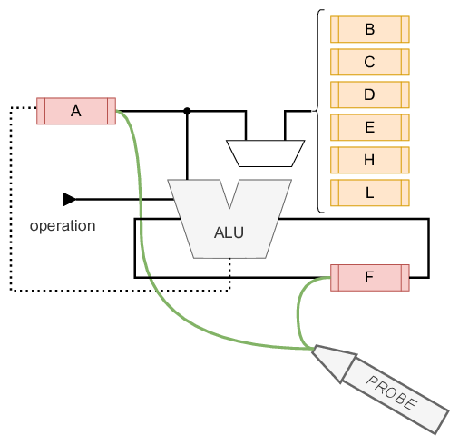
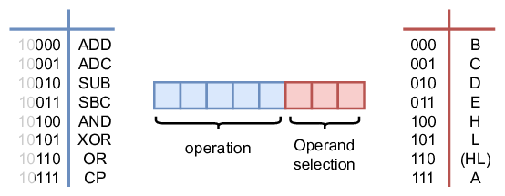

With our first experiments done, it is time to add some registers. Typically a processor has an array of registers inside to be used during operation: the register file. The GameBoy CPU has eight 8-bit registers and two 16-bit registers. The 8-bit registers are labeled: A, B, C, D, E, F, H, and L. The 16-bit registers are the program counter (PC) and the stack pointer (SP). We’re not going to bother with the memory in which the programs reside, so we can forget about the latter two. With this comes that the 16-bit operations also fall out-of-scope with respect to verification in this course.
Two 8-bit registers deserve some additional explanation: register A, and register F.
This register is used to store the 4 flags: Z, N, H, and C. They are positioned on the left-hand side, so the 4 least significant bits are always set to 0. We discussed these flag in the beginning of these lab sessions ALU.
Register A works a sort of accumulator register. The instructions for the ALU always use the A register as an operand, and the result of the ALU-operation is stored back in register A.
Off course the other registers are equally important. These registers can also be LOADED through machine-code instructions like LD B, L (e.g. load the value of register L into register B). As we want to stay focused on the ALU operations, the load instructions are left out of scope. This, however, would turn the other registers rather pointless, as we can not load any values in them. Therefore they are preloaded with fixed values. Please mind, this is not a correct model of the actual processor, but it will keep things a little more simple.
...
/* REGISTERS */
always_ff @(posedge clock)
begin
if (reset)
begin
regA = 8'h0;
regB = 8'h1;
regC = 8'h2;
regD = 8'h3;
regE = 8'h4;
regF = 8'h0;
regH = 8'h5;
regL = 8'h6;
end else begin
if (load_regA == 1'b1)
regA = alu_Z;
if (load_regF == 1'b1)
regF = { alu_flags_out, 4'h0 };
end
end
...
The DUT, in the previous chapter, only existed out of the ALU. Now it will also have the register file. With both components together, the DUT is ready for testing.
Since there is sequential logic in the new DUT, there is a need to add a clock and a reset signal. To indicate which operation the DUT has to execute, an 8-bit instruction is also added together with a valid signal. It should be clear that an instruction is only to be execute when the valid signal is high.
With this arrangement it will be easy to give instructions to the DUT. However, as these labs focus on verification there should also be a way to see what the DUT generated. For this purpose (and given the simplicity of the DUT) a probe can done on registers A and F.

The machine-level instructions in the GameBoy are 8 bits in width. Until now, only 3 bits were used to indicate an instruction for the ALU. Another 3 bits are required to make a selection on the second operand. This totals to 6 bits. So … we’re missing 2 bits. Luckily for us, (almost) all the operations that involve the ALU start with “10”. This can be seen nicely on (this webpage).

As an example the operation ADC H is used. This operation takes whatever is present in register A and adds register H. The sum is then stored again in register A. The possible carry-flag from the previous operation is also added in the sum.
As this operation is an ALU instruction it starts with “10”. The operation ADC is represented with “001”. Finally, the selection of the second operand H comes down to appending “100”. This results in the binary code: 10001100.
On the operand selection there is an option to choose (HL). This notation indicates there is indirect addressing. The value of this operand is the content which is stored at the address that is formed by concatenating the values of H and L.
In this lab setup, this value is ignored as the memory is out of scope for these labs.
The DUT as shown above, can be described as follows.
//------------------------------------------------------------------------------
// KU Leuven - ESAT/COSIC- Embedded Systems & Security
//------------------------------------------------------------------------------
// Module Name: gbprocessor - Behavioral
// Project Name: CD and Verif
// Description: The processor, containing the ALU and registers
//
// Revision Date Author Comments
// v0.1 20211322 VlJo Initial version
//
//------------------------------------------------------------------------------
module gbprocessor (
input reset,
input clock,
input [7:0] instruction,
input valid,
output [2*8-1:0] probe
);
logic [7:0] regA, regB, regC, regD, regE, regF, regH, regL;
logic load_regA, load_regF;
logic [7:0] alu_B, alu_Z;
logic [3:0] alu_flags_out;
assign load_regA = instruction[7] & ~instruction[6] & valid;
assign load_regF = instruction[7] & ~instruction[6] & valid;
assign probe = {regA, regF};
/* second operand selector MUX */
always_comb
begin
case(instruction[2:0])
3'h0: alu_B <= regB;
3'h1: alu_B <= regC;
3'h2: alu_B <= regD;
3'h3: alu_B <= regE;
3'h4: alu_B <= regH;
3'h5: alu_B <= regL;
3'h6: alu_B <= 8'h0;
default: alu_B <= regA;
endcase
end
/* ALU */
ALU ALU_inst00(
.A(regA),
.B(alu_B),
.flags_in(regF[7:4]),
.operation(instruction[5:3]),
.Z(alu_Z),
.flags_out(alu_flags_out));
/* REGISTERS */
always_ff @(posedge clock)
begin
if (reset)
begin
regA = 8'h0;
regB = 8'h1;
regC = 8'h2;
regD = 8'h3;
regE = 8'h4;
regF = 8'h0;
regH = 8'h5;
regL = 8'h6;
end else begin
if (load_regA == 1'b1)
regA = alu_Z;
if (load_regF == 1'b1)
regF = { alu_flags_out, 4'h0 };
end
end
endmodule